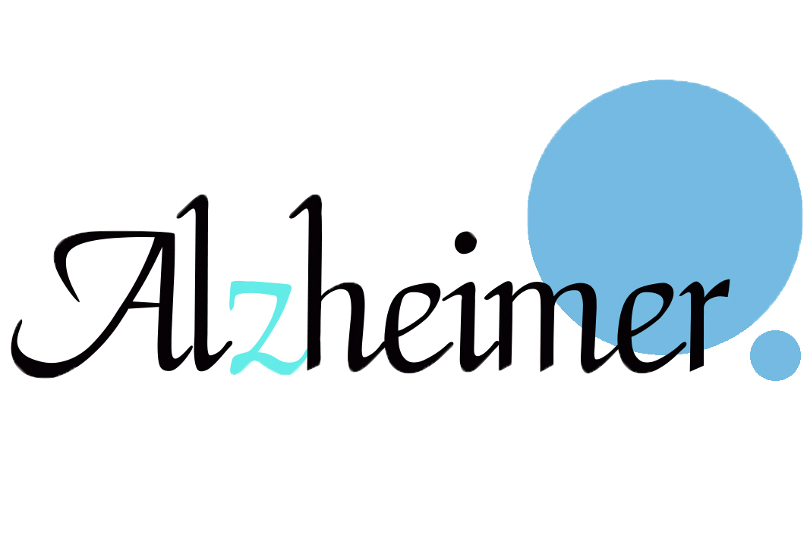

<!--
  Generated template for the HomePage page.

  See http://ionicframework.com/docs/components/#navigation for more info on
  Ionic pages and navigation.
-->
<ion-menu [content]="content" type="overlay" side="right">
  <ion-header>
    <ion-toolbar>
      <ion-title>Menu</ion-title>
    </ion-toolbar>
  </ion-header>

</ion-menu>
<ion-nav id="nav" #content [root]="rootPage" swipeBackEnabled="false"></ion-nav>
<ion-header>
  <ion-navbar color="primary">
    <ion-item no-lines color="primary" style="text-align:center">
      HOME  
      <button ion-button clear icon-only item-end menuToggle>
        <ion-icon name="menu" color="light">
        </ion-icon>
      </button>
    </ion-item>

    <ion-toolbar color="primary">
      LOGIN
    </ion-toolbar>

   
  </ion-navbar>
</ion-header>


<ion-content padding>

  <ion-grid style="text-align:center;">
    <ion-row style="font-weight:bold;background-color:#f9fff5;font-size:20px;">
     
        <div (click)="goToPrePlay()">
            
            <br>
            <br>

      <ion-item >
        <ion-input placeholder="Username"></ion-input>
      </ion-item>

      <ion-item>
        <ion-input type="password" placeholder="Password"></ion-input>              
      </ion-item>

      
      <button ion-button round (click)="generateSN1()">Login</button>  
      <button ion-button round (click)="nextregister()">ลงทะเบียน</button>
      

          </div>
   
    
        
     
      
    </ion-row>


  </ion-grid>

</ion-content>


<ion-footer>

</ion-footer>